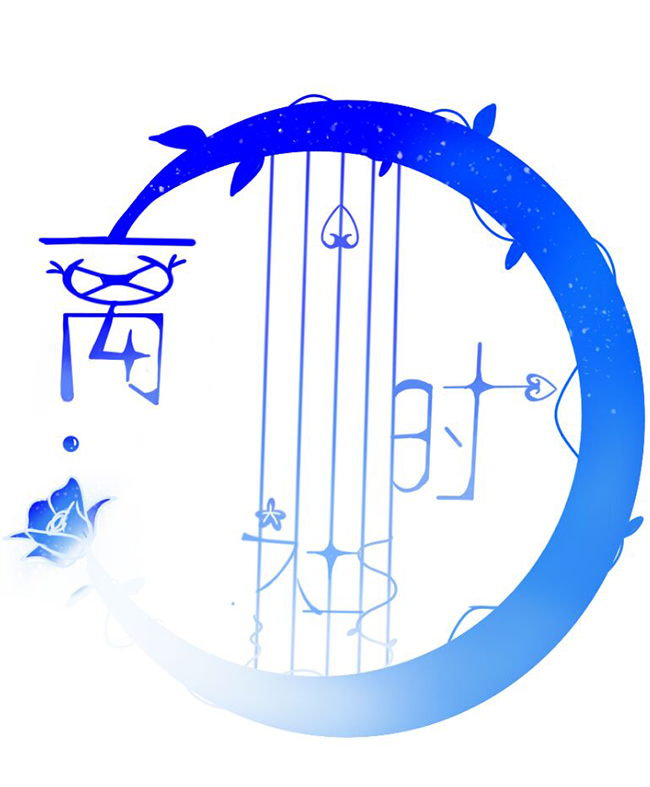
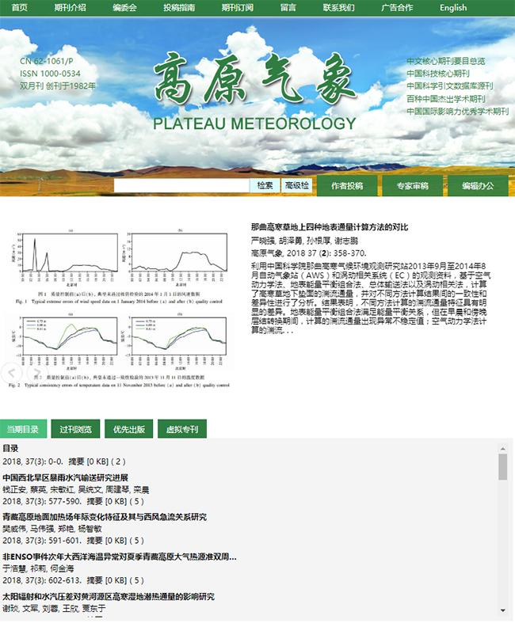
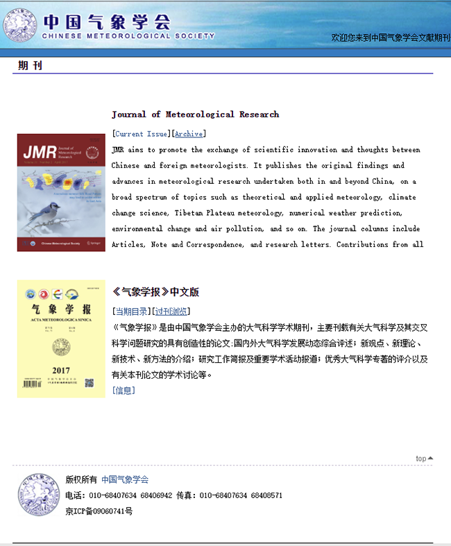
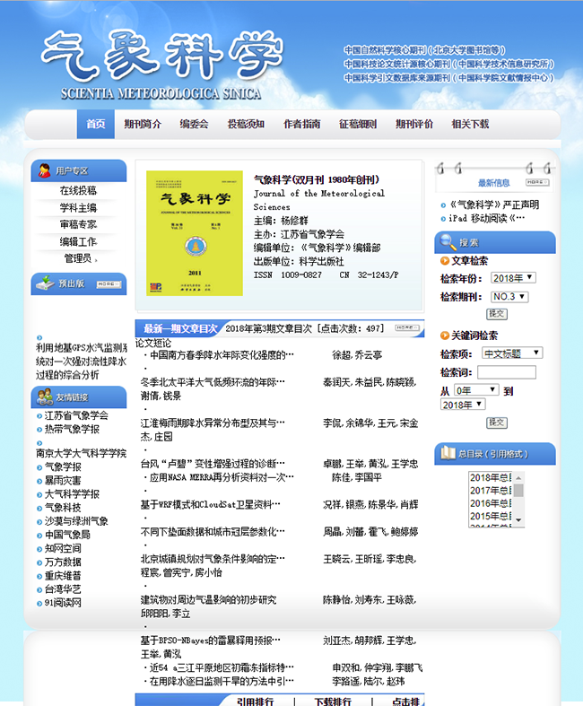
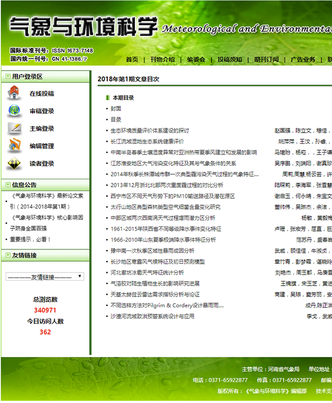
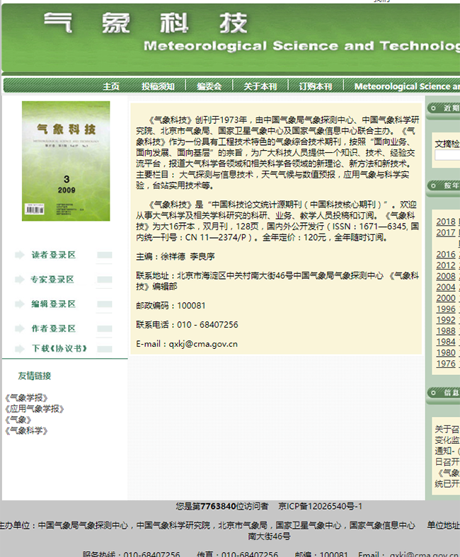
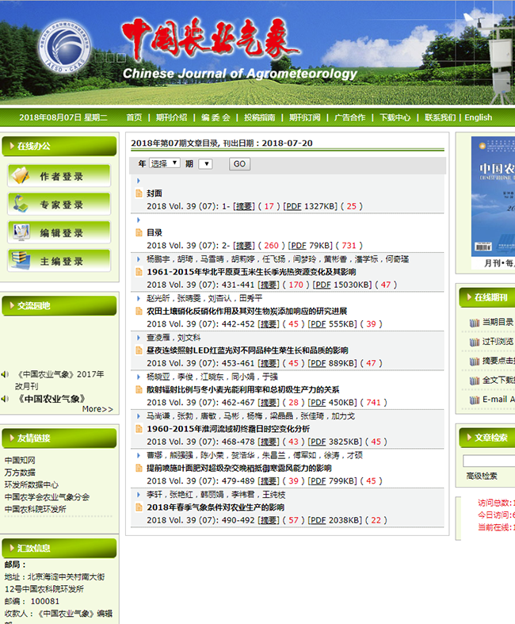

第五音的其他部门
返回上一页面
第五音是有很多自创分部的，下面是与我们建立合作允许我们去写他们的信息的
第五音音乐部
点我查看详细信息

第五音编题部
点我查看详细信息

第五音课后游戏处
点我查看详细信息
气象学报（中国气象学会）
包含中英版
点我前往~~

气象科学（江苏省气象协会）
注意：此网站打开时间较长
点我前往~~

气象与环境科学（河南省气象局）
点我前往~~

气象科技（国家卫星气象中心等）
点我前往~~

中国农业气象（农科院环境与可持续发展研究所）
点我前往~~

气象与减灾研究（江苏省气象学会）
点我前往~~
第五音音乐部
大家好这里是音乐部/离时社，主要的活动是做一些音乐相关的事情，有时候会做一些妄想症同人曲（音乐部）或者原创曲（离时社），现在正在绝赞招人中!如果你想加入离时社，和staff一起学属音叫的话，欢迎加入离时社审核群862934335。但如果你觉得自己没有能力怎么办?你可以先努力练习一段时间再加入（被打）咳咳，你可以加入713356133。现在该社处于刚建立的阶段，所以还没有多少作品orz有作品的话，我们会投到b站上，大概搜搜离时社或者第五音音乐部就可以找到我们的作品!还请大家多多支持~
第五音课后游戏处
第五音课后游戏群是一个以群员间闲聊八卦讨论V家为主，次为管理们为主组织游戏。群主一般不在，常驻管理有陵以及萨摩耶。群里最好不要宣群，三次就飞机票。为了确保游戏乐趣，参加游戏时请不要中途退出。对于新人我们并没有严苛的要求，但加入时请以“为了玩一些小游戏还有找志同道合的人聊天”的心情申请，商业目的或者无脑ky请绕道。最后吵架不要在群里，能小窗就不要公屏。还有请不要在群里过于讨论其他游戏，我们是课后的游戏处，不是讨论某某荣耀或者某某人格的，但是我们并不会强行要求，可为了群里的气氛，请尽量遵循我们的规则。希望群里的各位玩的开心。
第五音编题部
编题部，又名Compiling Questions Studio，是一个为第五音附属高中撰写一切试卷题目的社团。从属音历2月成立直到现在。先是由7人组成的社团，代号女王、饕餮、小丑/巨丑、火吻/舌吻、明天/昨晚、轮盘、窄门/宽菊，后续开始招人。唯一以及最后的成就：第五音附属高中——入学试，由【七宗罪】所有成员编写、码字、灵感提供以及查找/确定答案。QQ群号：813817241（目前超级缺人）。（鞠躬）感谢阅读。